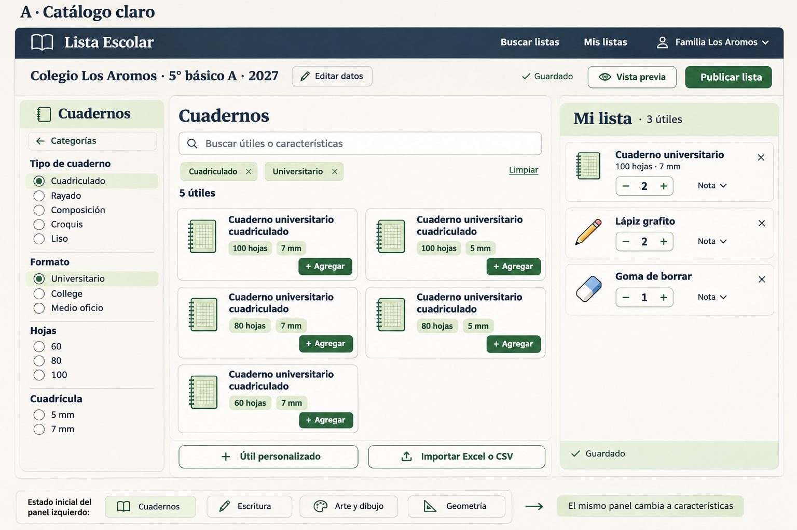
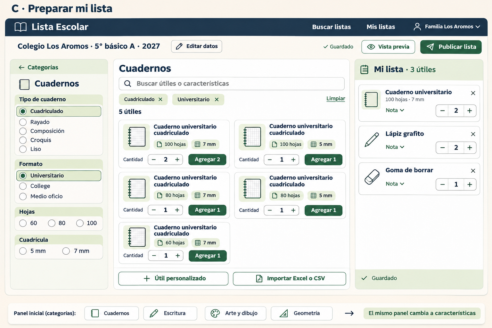

Exploración visual · 10 noviembre 2026
Un mismo flujo, tres diseños
Tres propuestas generadas con imagegen para mejorar la lectura, comparación y preparación de listas. Las categorías aparecen primero en el panel izquierdo; al elegir una, ese mismo panel muestra sus características.
Son mockups para comparar ideas. La aplicación actual permanece disponible en localhost:4200.
Qué comparar: legibilidad de nombres y atributos, facilidad para distinguir variantes, controles de cantidad, claridad del regreso a categorías y espacio útil para la lista. La franja inferior de cada imagen ilustra la transición del mismo panel; no es otra barra lateral dentro de la aplicación.
A · Catálogo claro
Tarjetas compactas, nombres legibles y características resumidas. La evolución más cercana al diseño actual. Prompt completo · Descargar PNG


Volver a las opciones ↑B · Comparar y agregar
Filas con hojas y cuadrícula alineadas para distinguir cuadernos muy parecidos con menos esfuerzo. Prompt completo · Descargar PNG
 Volver a las opciones ↑
Volver a las opciones ↑C · Preparar mi lista
Cantidad antes de agregar, con un botón explícito para incorporar cada útil a la lista. Prompt completo · Descargar PNG


Volver a las opciones ↑Recomendación: B para comparar variantes con rapidez; C si lo más importante es indicar cantidades antes de agregar. Al implementar, conservaríamos los conteos disponibles y la opción de limpiar cada filtro del catálogo actual.